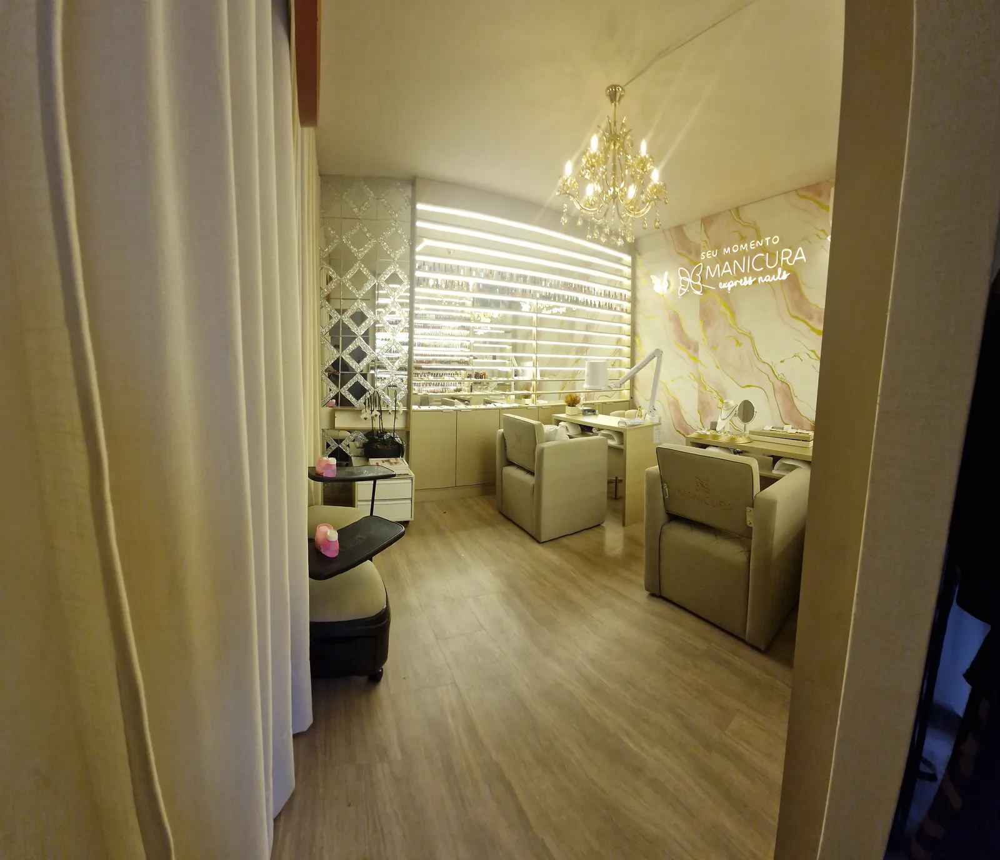
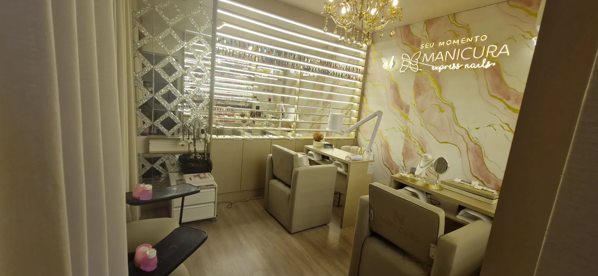

Manicure perto do Jardim Luciana, Vila Virgínia e Parque do Colégio: quanto tempo a pé?
Por Nayara das Dores Santos, nail designer e responsável técnica do Manicura Express Nails, no Anhangabaú, em Jundiaí/SP · publicado em
Do Jardim Luciana, da Vila Virgínia ou do Parque do Colégio, o Manicura Express Nails fica a menos de dez minutos a pé: pelas ruas, são cerca de 140 m (2 minutos) do Jardim Luciana, 410 m (5 a 6 minutos) da Vila Virgínia e 660 m (9 minutos) do Parque do Colégio, segundo o OpenStreetMap12. O estúdio fica na Av. Comandante Videlmo Munhoz, 91, Sala 3, no Anhangabaú, em Jundiaí/SP.
A que distância o estúdio fica de cada bairro?
Medimos com dados abertos do OpenStreetMap1, do ponto que o mapa usa para cada bairro até a porta do estúdio. Para o caminho pelas ruas, usamos um serviço de rotas que roda sobre esse mesmo mapa2:
| Bairro | Em linha reta | A pé, pelas ruas | Tempo a pé | De carro, pelas ruas |
|---|---|---|---|---|
| Jardim Luciana | 111 m | cerca de 140 m | cerca de 2 min | cerca de 260 m |
| Vila Virgínia | 243 m | cerca de 410 m | cerca de 5 a 6 min | cerca de 530 m |
| Parque do Colégio | 512 m | cerca de 660 m | cerca de 9 min | cerca de 940 m |
A distância é até o ponto central do bairro no mapa; da sua casa, pode ser um pouco mais ou um pouco menos.
- Em linha reta:
- a distância “em voo de pássaro”, sem contar as ruas.
- Pelas ruas:
- o caminho de verdade, calculado sobre o mapa das ruas2.
- Ponto do bairro:
- o ponto que o OpenStreetMap usa para marcar o bairro no mapa1.
Repare que a linha reta — a mesma da tabela da nossa página de manicure no Anhangabaú — é sempre menor que o caminho de verdade, porque ninguém atravessa quarteirão. Pelas ruas, os três bairros continuam a menos de dez minutos a pé.

E quem mora nos outros bairros vizinhos?
O Jardim Luciana, a Vila Virgínia e o Parque do Colégio não são os únicos pertinho. Pelo mesmo método, a Vila Wilma fica a cerca de 350 m em linha reta e 510 m pelas ruas (uns 7 minutos a pé), e o Jardim Ana Maria a cerca de 520 m em linha reta e 740 m pelas ruas (uns 10 minutos)12.
Morar a dez minutos a pé muda a relação com a manicure. Dá para marcar no começo da manhã, antes do trabalho, ou no fim da tarde, depois dele. Dá para vir sem carro, sem procurar vaga, sem depender de trânsito. E, se aparecer um compromisso de última hora, é só chamar no WhatsApp para ver se há um horário livre no dia.
A lista completa de bairros atendidos — incluindo quem vem de carro de mais longe — está na página de manicure no Anhangabaú, em Jundiaí.
Como chegar a pé ou de carro?
Do Jardim Luciana, é praticamente ao lado: no mapa, o endereço do estúdio aparece dentro do próprio Jardim Luciana, no Anhangabaú1; a rota a pé passa pela Rua Ângelo Daniese. Da Vila Virgínia, a rota sai da região da Rua Onofre Peres e segue pela Rua Major Gustavo Storch; do Parque do Colégio, sai da região da Rua Jorge Gebran e também chega pela Rua Major Gustavo Storch2. Todas terminam na Av. Comandante Videlmo Munhoz, 91, Sala 3.
Pontos de referência pelo mapa, com distâncias até o centro de cada lugar1:
- Praça Marli Pincinato Reynaldo, a cerca de 75 m do estúdio, em linha reta.
- Avenida Jundiaí: a Av. Comandante Videlmo Munhoz chega até ela; a pé, são cerca de 270 m pela própria avenida do estúdio, uns 4 minutos2.
- 19º Grupamento de Bombeiros, a cerca de 410 m, em linha reta.
- Parque Comendador Antônio Carbonari, a cerca de 470 m, em linha reta.
De carro, o caminho muda conforme o sentido das ruas; o mais simples é colocar o endereço no GPS. Abra o estúdio no Google Maps ou no OpenStreetMap. Quer saber como está o estacionamento no seu horário? Chame no WhatsApp que a gente responde.
O que conferir ao escolher uma manicure perto de casa?
Perto é ótimo, mas não é o único critério. Uma pesquisa em 235 salões brasileiros encontrou esterilização por calor seco em 61,7% deles e autoclave em 35,3%3. Outro estudo, em 269 centros de beleza, viu que a autoclave era o equipamento menos usado e que 86,3% não identificavam a embalagem com a data da esterilização4.
Por isso vale olhar três coisas em qualquer lugar: como o alicate é esterilizado, se o kit vem selado e com data, e se ele é aberto na sua frente. Aqui no estúdio, o kit é esterilizado em autoclave e aberto na sua frente em todo atendimento — entenda por que escolhemos a autoclave ou conheça o nosso protocolo Beleza Segura.
Quais serviços dá para fazer no intervalo do dia?
Para quem mora ou trabalha por perto, a Manicure Tradicional (R$ 52,00) está na agenda com 30 a 45 minutos, e a esmaltação com esmalte tradicional (R$ 28,00) leva 15. A Manicure Gel UV (R$ 120,00), de maior durabilidade que o esmalte comum, é agendada com uma hora. Valores e tempos da agenda online, conferidos em 27/09/2026 — veja todos em serviços e preços.
O estúdio abre de segunda a sexta das 9h às 12h e das 13h às 19h30, e aos sábados das 8h às 12h.

Como agendar a sua manicure no bairro?
O jeito mais rápido é agendar online. Prefere conversar? Chame no WhatsApp (11) 95996-3541 ou veja todos os canais na página de contato. Esperamos você na Av. Comandante Videlmo Munhoz, 91, Sala 3 – Anhangabaú, Jundiaí/SP.
Perguntas frequentes
Onde fica o Manicura Express Nails?
Na Av. Comandante Videlmo Munhoz, 91, Sala 3, no Anhangabaú, em Jundiaí/SP, a cerca de 75 m da Praça Marli Pincinato Reynaldo e a uns 4 minutos a pé da Avenida Jundiaí.
Qual a distância do Jardim Luciana até o Manicura Express Nails?
No mapa, o estúdio aparece dentro do próprio Jardim Luciana: são cerca de 110 m em linha reta e 140 m pelas ruas, uns dois minutos a pé.
Dá para ir a pé da Vila Virgínia?
Dá. São cerca de 410 m pelas ruas, uns 5 a 6 minutos de caminhada. Em linha reta, a distância é de 243 m.
E do Parque do Colégio?
Do Parque do Colégio são cerca de 660 m pelas ruas, uns 9 minutos a pé. Em linha reta, 512 m.
Qual o horário do estúdio?
De segunda a sexta, das 9h às 12h e das 13h às 19h30; aos sábados, das 8h às 12h. O atendimento é com horário marcado.
Fontes
- OpenStreetMap e colaboradores (licença ODbL). Pontos dos bairros consultados via Nominatim: Jardim Luciana · Vila Virgínia · Parque do Colégio · Vila Wilma · Jardim Ana Maria. Pontos de referência: Praça Marli Pincinato Reynaldo · Avenida Jundiaí · 19º Grupamento de Bombeiros · Parque Comendador Antônio Carbonari. Direitos autorais e licença. Consulta em 27/09/2026.
- Rotas calculadas com o OSRM sobre dados do OpenStreetMap: a pé no servidor da FOSSGIS (routing.openstreetmap.de) e de carro no servidor de demonstração do Project OSRM. Consulta em 27/09/2026.
- Garbaccio JL, Oliveira AC. Biossegurança em salões de beleza: avaliação da estrutura e dispositivos. Revista de Enfermagem do Centro-Oeste Mineiro, 2018;8. DOI: 10.19175/recom.v8i0.1833
- Felipe da Silva IMA, Silva FMAM, Bassi D, et al. Biossegurança em centros de embelezamento: estrutura e processamento de materiais. Revista de Enfermagem UFPE on line, 2019;13. DOI: 10.5205/1981-8963.2019.239171
Distâncias calculadas em 27/09/2026 a partir das coordenadas do estúdio (-23,1882; -46,8978) e dos pontos dos bairros no OpenStreetMap; tempos a pé estimados pelo serviço de rotas. Mudanças nas ruas podem alterar os valores.